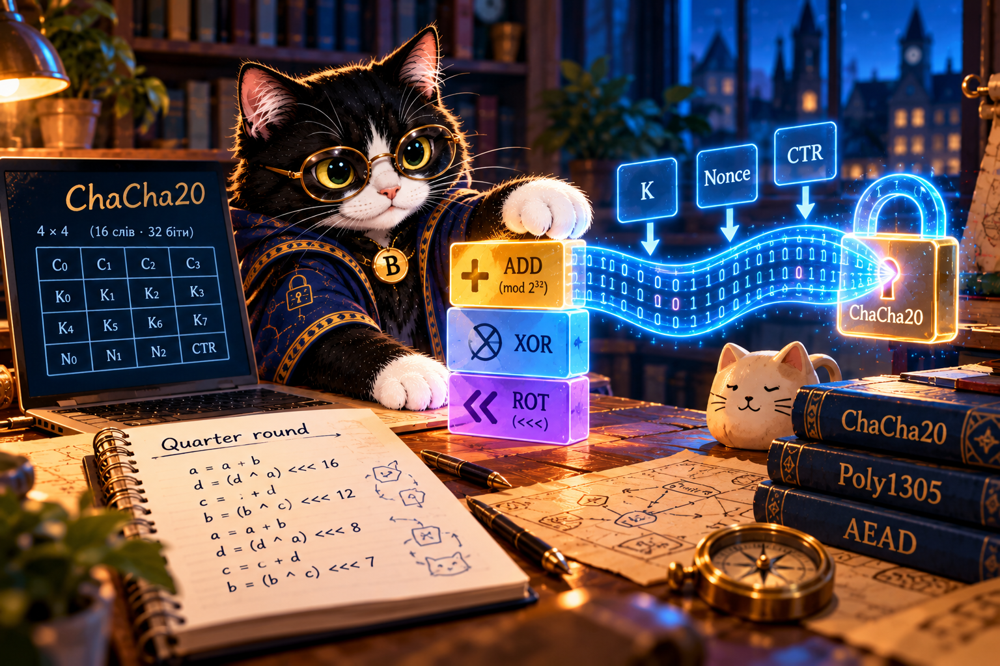

ChaCha20 — секрет у потоці
Як ключ, nonce та лічильник створюють потік байтів? Чому його не можна повторювати?

Справа Буча: потік, який не можна повторити
Буч передає повідомлення відкритим каналом. ChaCha20 створює ключовий потік із ключа, nonce та лічильника, а XOR приховує байти. Якщо той самий потік використати двічі, з'являється небезпечний зв'язок між шифротекстами.
ARX
Addition (mod 2³²), Rotation, XOR. Без S-box.
Стан 4×4
16 слів по 32 біти. 20 раундів формують 64 байти ключового потоку.
ChaCha20-Poly1305
До шифрування додається тег автентифікації для виявлення підміни.
Мінілабораторія: XOR
Спробуйте зашифрувати байт 00110110 потоком 10101001, а потім повернути результат.
Чотири практики
Висновок
Саме шифрування приховує дані, але не підтверджує їхню цілісність. Не повторюйте nonce з тим самим ключем. Для реального захисту застосовуйте перевірені криптографічні бібліотеки та автентифіковані схеми.
Завершити: форма відповідей